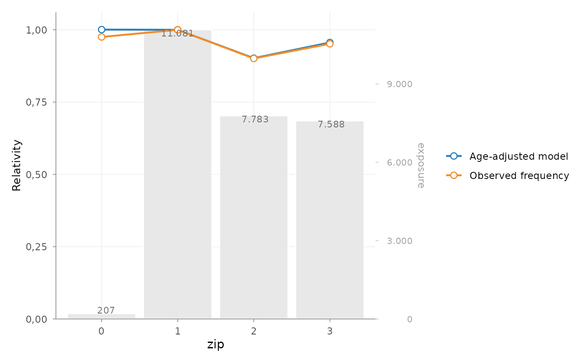

Add observed factor experience to a rating table
Source:R/model_rating_table.R
add_factor_experience.RdAdd observed claims experience by rating factor to a rating table for comparison with estimated GLM relativities.
Usage
add_factor_experience(x, ...)
# S3 method for class 'rating_table'
add_factor_experience(
x,
observed = NULL,
data = NULL,
risk_factors = NULL,
claim_count = NULL,
exposure = NULL,
claim_amount = NULL,
metric = NULL,
label = "Observed experience",
color = NULL,
scale = c("reference", "mean"),
experience = NULL,
...
)Arguments
- x
A
rating_tableobject returned byrating_table().- ...
Unused.
- observed
Optional
factor_analysis()object or list offactor_analysis()objects. If supplied, these observed summaries are attached directly.- data
Optional
data.frame. Ifobserved = NULL, observed experience is calculated from this data.- risk_factors
Optional character vector. Risk factors for which observed experience should be calculated. If
NULL, all risk factors in the rating table are used.- claim_count
Optional character string. Claim count column used by
factor_analysis().- exposure
Optional character string. Exposure column used by
factor_analysis().- claim_amount
Optional character string. Claim amount column used by
factor_analysis().- metric
Optional character string. Default observed metric to plot. Common choices are
"frequency","severity"/"average_severity"and"risk_premium". The metric can also be overridden inautoplot.rating_table().- label
Character; legend label for the observed experience line.
- color
Optional line color. If
NULL, the internal risk premium color is used.- scale
Character; scaling applied before plotting. One of
"reference"or"mean".- experience
Deprecated alias for
observed.
Details
The observed experience is marginal: it is summarised for each rating
factor separately. Supply data to calculate it for all factors available
in both the rating table and the data (or specify risk_factors), or pass
existing factor_analysis() results through observed.
Estimated GLM relativities adjust for other predictors; marginal observed
experience does not. Differences can reflect the mix of other risks and
do not necessarily indicate model misspecification. Use this comparison
for model interpretation, not formal calibration. Use calibration_analysis()
to compare full-model predictions with observed outcomes.
This makes it possible to compare fitted GLM relativities with observed
portfolio patterns in autoplot.rating_table(). The full observed output is
stored on the rating table, so autoplot.rating_table() can later switch
between metrics such as "frequency", "average_severity" and
"risk_premium" without recalculating the summaries.
The observed metric is scaled before plotting. With scale = "reference"
the metric is divided by the observed value of the model reference level. If
a clear reference level cannot be found, the metric is divided by its mean
across the observed levels of that factor. With scale = "mean", this mean
is always used.
Examples
df <- as.data.frame(MTPL)
df$zip <- set_reference_level(factor(df$zip), df$exposure)
model <- glm(
nclaims ~ zip + age_policyholder + offset(log(exposure)),
family = poisson(),
data = df
)
effects <- rating_table(
"Age-adjusted model" = model, model_data = df, exposure = "exposure"
)
effects |>
add_factor_experience(
data = df,
risk_factors = "zip",
claim_count = "nclaims",
exposure = "exposure",
label = "Observed frequency"
) |>
autoplot(risk_factors = "zip", metric = "frequency")
 observed <- factor_analysis(
df,
risk_factors = "zip",
claim_count = "nclaims",
exposure = "exposure"
)
effects |>
add_factor_experience(observed = observed, label = "Observed frequency") |>
autoplot(risk_factors = "zip", metric = "frequency")
observed <- factor_analysis(
df,
risk_factors = "zip",
claim_count = "nclaims",
exposure = "exposure"
)
effects |>
add_factor_experience(observed = observed, label = "Observed frequency") |>
autoplot(risk_factors = "zip", metric = "frequency")
